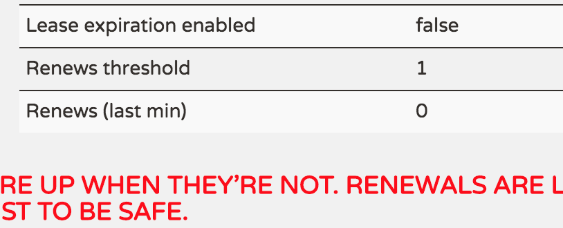

自我保护模式
什么是自我保护模式
通常情况下，Eureka Instance在Eureka Server上注册后，会定期发送心跳，Eureka Server通过心跳来判断Eureka Instance是否健康，同时会定期删除超过一定时长没有发送心跳的Instance。通常有两种情况会导致Eureka Server收不到Instance的心跳，一是Instance自身原因所致，比如故障或关闭；一是Instance与Server之间的网络出现故障。通常前者只会导致个别Instance出现故障，一般不会出现大批量的故障，而后者通常会导致Eureka Server在短时间内无法收到大批心跳。考虑到这个区别，Eureka设定了一个阀值，当判断挂掉的Instance数量超过阀值时，Eureka Server认为很大程度上出现了网络故障，将不再删除心跳过期的Instance。我们把这种模式叫着Eureka Server的自我保护模式。
注意进入自我保护模式只是不删除心跳过期的Instance,正常的注册和注销依然正常进行。
优点和缺点
- 优点
如果Eureka服务节点在短时间里丢失了大量的心跳连接(注：可能发生了网络故障)，那么这个 Eureka节点会进入”自我保护模式“，同时保留那些“心跳死亡“的服务注册信息不过期。此时，这个Eureka节点对于新的服务还能提供注册服务，对 于”死亡“的仍然保留，以防还有客户端向其发起请求。当网络故障恢复后，这个Eureka节点会退出”自我保护模式“。Eureka的哲学是，同时保 留”好数据“与”坏数据“总比丢掉任何”好数据“要更好，所以这种模式在实践中非常有效。
同时，Eureka还有客户端缓存功能(注：Eureka分为客户端程序与服务器端程序两个部分，客户端程序负责向外提供注册与发现服务接口)。 所以即便Eureka集群中所有节点都失效，或者发生网络分割故障导致客户端不能访问任何一台Eureka服务器;Eureka服务的消费者仍然可以通过 Eureka客户端缓存来获取现有的服务注册信息。甚至最极端的环境下，所有正常的Eureka节点都不对请求产生响应，也没有更好的服务器解决方案来解决这种问题时;得益于Eureka的客户端缓存技术，消费者服务仍然可以通过Eureka客户端查询与获取注册服务信息，这点很重要。 - 缺点
可能会存在误判，进入保护模式后，即便Instance真的挂掉了，也可能不被Server删除。采用Eureka做服务发现时，需要客户端考虑并处理这种情况。
处理机制
回收线程（Eureka-EvictionTimer）
- 功能：定期回收心跳过期的Instance
重要参数：
回收周期 eureka.evictionIntervalTimerInMs 默认值：1m 心跳间隔 eureka.lease.renewalInterval 默认值：30s 心跳过期时长 eureka.lease.duration 默认值：90s 是否开启自我保护模式 eureka.enableSelfPreservation 默认：true 心跳比例阀值 eureka.renewalPercentThreshold 默认值：0.85处理流程伪代码：
if(!isLeaseExpirationEnabled()) { return; } else { //获得可以回收的数量 //随机回收心跳过期的Instance，回收数量为上一步得到的数量 }
注意事项：
1、回收线程在计算心跳时，默认心跳间隔为30s，对应1m产生2个心跳。如果Instance修改了心跳间隔会导致回收线程计算错误。AbstractInstanceRegistry -- 》 // Since the client wants to cancel it, reduce the threshold // (1 for 30 seconds, 2 for a minute) this.expectedNumberOfRenewsPerMin = this.expectedNumberOfRenewsPerMin + 2; this.numberOfRenewsPerMinThreshold = (int) (this.expectedNumberOfRenewsPerMin * serverConfig.getRenewalPercentThreshold());
2、由于心跳处理时的bug，导致在计算时的心跳过期时长=设定值的2倍。
* Checks if the lease of a given {@link com.netflix.appinfo.InstanceInfo} has expired or not.
*
* Note that due to renew() doing the 'wrong" thing and setting lastUpdateTimestamp to +duration more than
* what it should be, the expiry will actually be 2 * duration. This is a minor bug and should only affect
* instances that ungracefully shutdown. Due to possible wide ranging impact to existing usage, this will
* not be fixed.
*
* @param additionalLeaseMs any additional lease time to add to the lease evaluation in ms.
*/
public boolean isExpired(long additionalLeaseMs) {
return (evictionTimestamp > 0 || System.currentTimeMillis() > (lastUpdateTimestamp + duration + additionalLeaseMs));
}
/**
* Renew the lease, use renewal duration if it was specified by the
* associated {@link T} during registration, otherwise default duration is
* {@link #DEFAULT_DURATION_IN_SECS}.
*/
public void renew() {
lastUpdateTimestamp = System.currentTimeMillis() + duration;
}
3、增加一个Instance,对应1m增加2个心跳
- 阀值心跳数更新线程（ReplicaAwareInstanceRegistry - RenewalThresholdUpdater）
- 功能：定期更新回收的心跳阀值（约等于instance2心跳阀值比例），防止出现网络故障时过多回收instance。
- 重要参数： 更新周期：eureka.renewalThresholdUpdateIntervalMs 默认值：15m
图例
通过Eureka的管理平台，可以看到是否进入自我保护模式，如下图所示

图中：
Lease expiration enabled false // false表明进入保护模式
Renews threshold 1 //心跳阀值
Renews (last min) 0 // 上1分钟的心跳数
进入保护模式时，界面可能会出现一行红字提示，如上所示。